STA entities create, edit or delete tool
These tools allow you to create, edit, or delete a record in an STA service.
Depending on the node that is linked, different options will be available. Each option is explained in its corresponding section.
CreateTo create a new record in an entity, you must link the singular entity tool to the STA service or to a related STA entity (see STA schema). You must link all required entities to this node. Each entity can have only one record. The system will automatically add these IDs to the create request. Mandatory linked entities will be marked with an asterisk.
Double-clicking the node will display a dialog box showing the linked entities with their IDs and a set of possible properties to fill out. Required properties will also be marked with an asterisk.
You can create a new record only if you are logged in.
EditTo edit a record, the entity you want to modify must have only one record. Link the singular entity tool of this entity to it. Double-clicking this tool will display a dialog box with the existing information. This dialog is the same one used for deleting records. To modify the data, make your changes and click "Update". You must be logged in to edit an entity.
DeleteTo delete a record, the entity you want to remove must have only one record. Link the singular entity tool of this entity to it. Double-clicking this tool will display a dialog box with the existing information (the same dialog used for editing). To delete the record, click the "Delete" button. You must be logged in to delete an entity.
 Campaign
Campaign
Setting Up the Node:

How to Use the Node:
The Campaign tool allows you to create a new Campaign entity in the connected STA service. To create a Campaign, the Campaign tool only needs to be linked to the STA service and to any required entities. As with the other tools, you must also be logged in to TAPIS.
Attributes of the entity
- name (CharacterString): A label for the Campaign entity, commonly expressed as a descriptive name.
- description (CharacterString): A short description of the Campaign entity.
- classification (ValueCode [0..1]): Indicates whether the data streams or observation groups of the Campaign contain sensitive information.
- termsOfUse (CharacterString): The terms of use applicable to the Campaign entity.
- privacyPolicy (CharacterString [0..1]): The terms of use concerning personal data contained in the Campaign entity.
- url (URL [0..1]): The URL providing additional information about the Campaign that cannot be captured in the entity itself.
- creationTime (TM Instant): The time at which the Campaign entity was created.
- startTime (TM Instant [0..1]): The starting time of the Campaign.
- endTime (TM Instant [0..1]): The ending time of the Campaign.
Create
To create a new Campaign, you must be logged in to TAPIS. When you log in, your login is associated with the corresponding Party entity.
To open the dialog, double-click with the left mouse button. The dialog contains all the attributes of the Campaign and any required linked entities. Required linked entities are added automatically. Complete the remaining fields and click Create.

If the entity has been created successfully, a text similar to this will appear on the right. You can view the entity you have just created by clicking on the text following Available at:.

This is the result that opens in a new page when you click the link following Available at:.

If you want to see how the STA service has been updated with the new information, link the corresponding entity tool in its plural form (Campaigns).

Edit
To edit a Campaign, you must first link a tool that allows you to select only that specific record (you can use Select Resource, Select Row, or Filter Rows).
Continuing with the selected record, double-click the Campaign tool to open the dialog. All editable fields can be modified.

Once you have made the changes, click the Update button to automatically send the request to the STA service. If the operation is successful, a message similar to the following will appear on the right-hand side.

Clicking on the Campaign ID will open a new browser tab displaying the updated entity.
Delete
To delete a Campaign from the STA service, as in the case of editing a Campaign, you must first select it using a tool that allows you to select the corresponding record (you can use Select Resource, Select Row, or Filter Rows).
By double-clicking with the left mouse button, the dialog for this Campaign will open, displaying all its information. The same dialog as the one used for editing the Campaign will appear. To delete the Campaign, simply click the Delete button.

Recipes where this tool is used:
 Cell
Cell
Setting Up the Node:

How to Use the Node:
The Cell tool allows you to create a new Cell entity in the connected STA service. To create a Cell, the Cell tool only needs to be linked to the STA service, as it does not depend on any other entity. As with the other tools, you must also be logged in to TAPIS.
Attributes of the entity
- name (CharacterString): A property provides a label for the Cell entity, commonly a descriptive name.
- description (CharacterString): A property provides a description of the Cell entity.
- properties (JSON Object [0..1]): A JSON object containing additional information about the Cell.
Create
To create a new Cell, you must be logged in to TAPIS.
To open the dialog, double-click with the left mouse button. The dialog contains all the attributes of the Cell. The Properties field is not mandatory. You can add as many properties as you want, one by one.

Once you have finished, click Create.
If the entity has been created successfully, a text similar to this will appear on the right. You can view the entity you have just created by clicking on the text following Available at:.

This is the result that opens in a new page when you click the link following Available at:.

If you want to see how the STA service has been updated with the new information, link the corresponding entity tool in its plural form (Cells).

Edit
To edit a Cell, you must first select it using a tool that allows you to select only that specific record (you can use Select Resource, Select Row, or Filter Rows).
By double-clicking with the left mouse button, the dialog for this Cell will open, displaying all its information. All fields are editable except for fields automatically provided by the STA service.

Once this is done, click the Update button to automatically send the request to the STA service. If the operation is successful, a message similar to the following will appear on the right-hand side.

Clicking on the Cell ID will open a new browser tab displaying the updated entity.
Delete
To delete a Cell from the STA service, you must first select it using a tool that allows you to select the corresponding record (you can use Select Resource, Select Row, or Filter Rows).
By double-clicking with the left mouse button, the dialog for this Cell will open, displaying all its information. The same dialog as the one used for editing the Cell will appear. To delete the Cell, simply click the Delete button.

Recipes where this tool is used:
 Datastream
Datastream
Setting Up the Node:

How to Use the Node:
The Datastream tool allows you to create a new Datastream entity in the connected STA service. To create a Datastream, the Datastream tool must be linked to the STA service and to all required entities. You must also be logged in to TAPIS.
Attributes of the entity
- name (CharacterString): A property provides a label for the Datastream entity, commonly a descriptive name.
- description (CharacterString): A property provides a description of the Datastream entity.
- unitOfMeasurement (UnitOfMeasurement): The unit of measurement used by the Datastream.
- observationType (URI): The type of Observation used by the Datastream.
- phenomenonTime (TM_Object [0..1]): The time interval during which the Datastream's Observations occur.
- resultTime (TM_Object [0..1]): The time interval during which the Datastream's Observations are received by the system.
- properties (JSON Object [0..1]): A JSON object containing additional information about the Datastream.
Create
To create a new Datastream, you must be logged in to TAPIS. The Datastream tool must be linked to the STA service and to all required entities.
To open the dialog, double-click with the left mouse button. The required linked entities and their IDs are added automatically. The dialog contains the attributes of the Datastream. Complete the remaining fields and click Create.
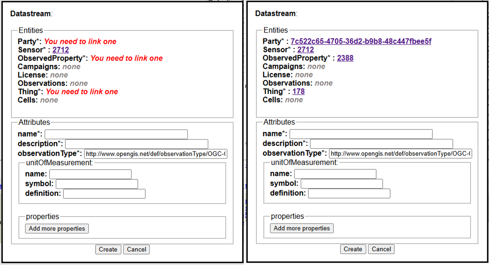
If the entity has been created successfully, a text similar to this will appear on the right. You can view the entity you have just created by clicking on the text following Available at:.
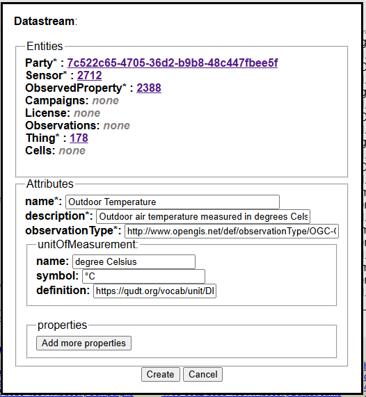
This is the result that opens in a new page when you click the link following Available at:.

If you want to see how the STA service has been updated with the new information, link the corresponding entity tool in its plural form (Datastreams).

Edit
To edit a Datastream, you must first select it using a tool that allows you to select only that specific record (you can use Select Resource, Select Row, or Filter Rows).
By double-clicking with the left mouse button, the dialog for this Datastream will open, displaying all its information. Modify the editable fields.

Once this is done, click the Update button to automatically send the request to the STA service. If the operation is successful, a message similar to the following will appear on the right-hand side.

Clicking on the Datastream ID will open a new browser tab displaying the updated entity.
Delete
To delete a Datastream from the STA service, you must first select it using a tool that allows you to select the corresponding record (you can use Select Resource, Select Row, or Filter Rows).
By double-clicking with the left mouse button, the dialog for this Datastream will open, displaying all its information. The same dialog as the one used for editing the Datastream will appear. To delete the Datastream, simply click the Delete button.

Recipes where this tool is used:
 FeatureOfInterest
FeatureOfInterest
Setting Up the Node:

How to Use the Node:
The FeatureOfInterest tool allows you to create a new FeatureOfInterest entity in the connected STA service. The FeatureOfInterest tool must be linked to the STA service and to any required entities. You must also be logged in to TAPIS.
Attributes of the entity
- name (CharacterString): A property provides a label for the FeatureOfInterest entity, commonly a descriptive name.
- description (CharacterString): A property provides a description of the FeatureOfInterest entity.
- encodingType (CharacterString): The encoding type of the feature.
- feature (Any): The feature itself, encoded according to the specified encoding type.
- properties (JSON Object [0..1]): A JSON object containing additional information about the FeatureOfInterest.
Create
To create a new FeatureOfInterest, you must be logged in to TAPIS.
To open the dialog, double-click with the left mouse button. The dialog contains all the attributes of the FeatureOfInterest. The Properties field is not mandatory. Complete the fields and click Create.
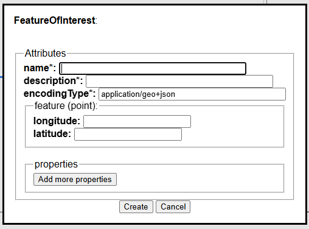
If the entity has been created successfully, a text similar to this will appear on the right. You can view the entity you have just created by clicking on the text following Available at:.
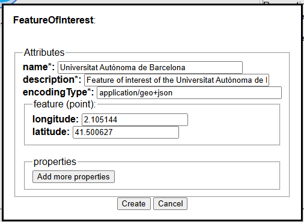
This is the result that opens in a new page when you click the link following Available at:.
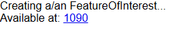
If you want to see how the STA service has been updated with the new information, link the corresponding entity tool in its plural form (FeaturesOfInterest).
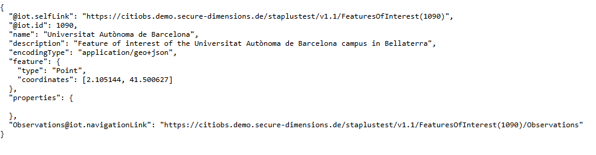
Edit
To edit a FeatureOfInterest, you must first select it using a tool that allows you to select only that specific record (you can use Select Resource, Select Row, or Filter Rows).
By double-clicking with the left mouse button, the dialog for this FeatureOfInterest will open, displaying all its information. Modify the editable fields.
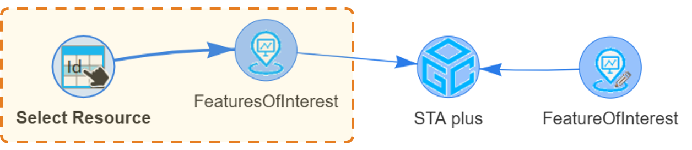
Once this is done, click the Update button to automatically send the request to the STA service. If the operation is successful, a message similar to the following will appear on the right-hand side.
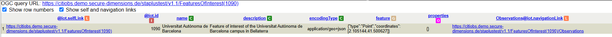
Clicking on the FeatureOfInterest ID will open a new browser tab displaying the updated entity.
Delete
To delete a FeatureOfInterest from the STA service, you must first select it using a tool that allows you to select the corresponding record (you can use Select Resource, Select Row, or Filter Rows).
By double-clicking with the left mouse button, the dialog for this FeatureOfInterest will open, displaying all its information. The same dialog as the one used for editing the FeatureOfInterest will appear. To delete the FeatureOfInterest, simply click the Delete button.
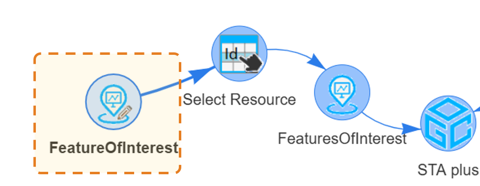
Recipes where this tool is used:
 HistoricalLocation
HistoricalLocation
Setting Up the Node:

How to Use the Node:
The HistoricalLocation tool allows you to create, edit, or delete a HistoricalLocation entity in the connected STA service. To create a HistoricalLocation, the tool must be linked to the STA service and to the required related entities. You must also be logged in to TAPIS.
Attributes of the entity
- time (TM_Object): The time when the Thing's location was changed.
- location (Location): The Location entity associated with the Thing at the specified time.
Create
To create a new HistoricalLocation, you must be logged in to TAPIS. The tool must be linked to the STA service and to the required related entities.
To open the dialog, double-click with the left mouse button. The required linked entities and their IDs are added automatically. Complete the remaining fields and click Create.

If the entity has been created successfully, a text similar to this will appear on the right. You can view the entity you have just created by clicking on the text following Available at:.

This is the result that opens in a new page when you click the link following Available at:.

If you want to see how the STA service has been updated with the new information, link the corresponding entity tool in its plural form (HistoricalLocations).

Edit
To edit a HistoricalLocation, you must first select it using a tool that allows you to select only that specific record (you can use Select Resource, Select Row, or Filter Rows).
By double-clicking with the left mouse button, the dialog for this HistoricalLocation will open, displaying all its information. Modify the editable fields.

Once this is done, click the Update button to automatically send the request to the STA service. If the operation is successful, a message similar to the following will appear on the right-hand side.

Clicking on the HistoricalLocation ID will open a new browser tab displaying the updated entity.
Delete
To delete a HistoricalLocation from the STA service, you must first select it using a tool that allows you to select the corresponding record (you can use Select Resource, Select Row, or Filter Rows).
By double-clicking with the left mouse button, the dialog for this HistoricalLocation will open, displaying all its information. The same dialog as the one used for editing the HistoricalLocation will appear. To delete the HistoricalLocation, simply click the Delete button.

Recipes where this tool is used:
 License
License
Setting Up the Node:

How to Use the Node:
The License tool allows you to create a new License entity in the connected STA service. To create a License, the License tool only needs to be linked to the STA service, as it does not depend on any other entity. As with the other tools, you must also be logged in to TAPIS.
Attributes of the entity
- name (CharacterString): A label for the License entity, commonly expressed as a descriptive name.
- description (CharacterString [0..1]): A short description of the License entity.
- definition (URI): A URI referencing the definition of the License.
- logo (CharacterString [0..1]): The URI of the logo associated with the License.
- attributionText (CharacterString [0..1]): The text to be used as attribution when required by the License.
Create
To create a new License, you must be logged in to TAPIS.
To open the dialog, double-click with the left mouse button. The dialog contains all the attributes of the License. Complete the fields and click Create.
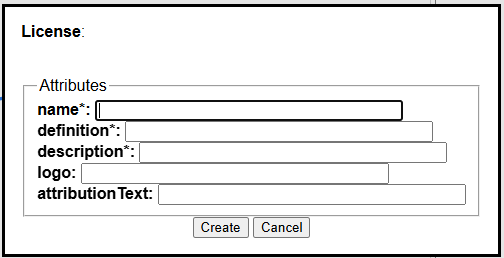
If the entity has been created successfully, a text similar to this will appear on the right. You can view the entity you have just created by clicking on the text following Available at:.
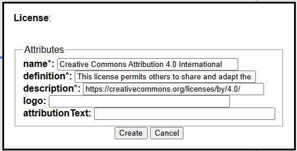
This is the result that opens in a new page when you click the link following Available at:.
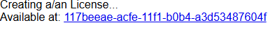
If you want to see how the STA service has been updated with the new information, link the corresponding entity tool in its plural form (Licenses).
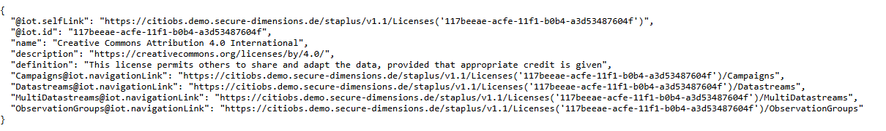
Edit
To edit a License, you must first select it using a tool that allows you to select only that specific record (you can use Select Resource, Select Row, or Filter Rows).
By double-clicking with the left mouse button, the dialog for this License will open, displaying all its information. Modify the editable fields.
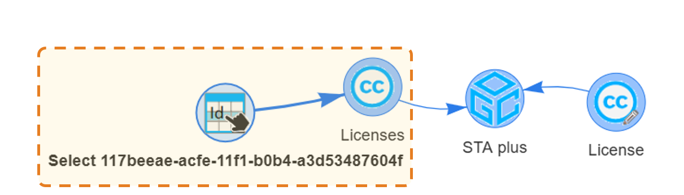
Once this is done, click the Update button to automatically send the request to the STA service. If the operation is successful, a message similar to the following will appear on the right-hand side.
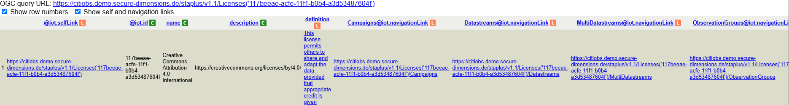
Clicking on the License ID will open a new browser tab displaying the updated entity.
Delete
To delete a License from the STA service, you must first select it using a tool that allows you to select the corresponding record (you can use Select Resource, Select Row, or Filter Rows).
By double-clicking with the left mouse button, the dialog for this License will open, displaying all its information. The same dialog as the one used for editing the License will appear. To delete the License, simply click the Delete button.
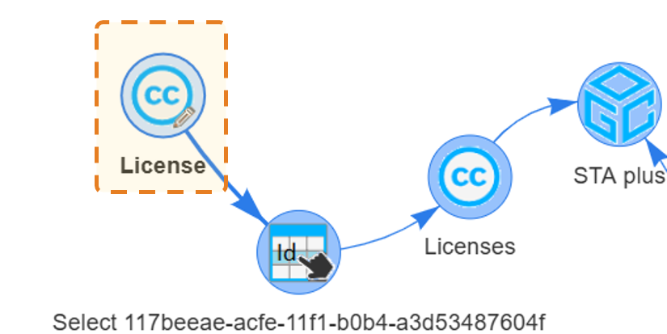
Recipes where this tool is used:
 Location
Location
Setting Up the Node:
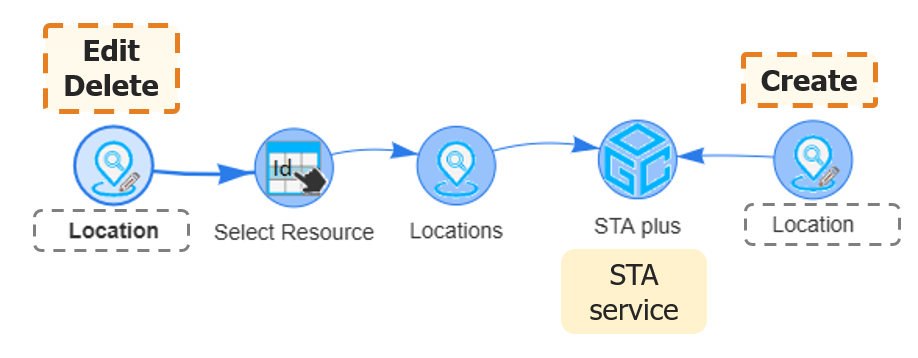
How to Use the Node:
The Location tool allows you to create a new Location entity in the connected STA service. To create a Location, the Location tool only needs to be linked to the STA service, as it does not depend on any other entity. As with the other tools, you must also be logged in to TAPIS.
Attributes of the entity
- name (CharacterString): A property provides a label for the Location entity, commonly a descriptive name.
- description (CharacterString): A property provides a description of the Location entity.
- encodingType (CharacterString): The encoding type of the location.
- location (Any): The location of the Thing, expressed according to the specified encoding type.
- properties (JSON Object [0..1]): A JSON object containing additional information about the Location.
Create
To create a new Location, you must be logged in to TAPIS.
To open the dialog, double-click with the left mouse button. The dialog contains all the attributes of the Location. The Properties field is not mandatory. Complete the fields and click Create.
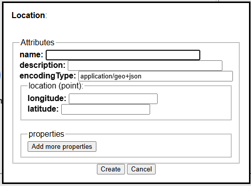
If the entity has been created successfully, a text similar to this will appear on the right. You can view the entity you have just created by clicking on the text following Available at:.
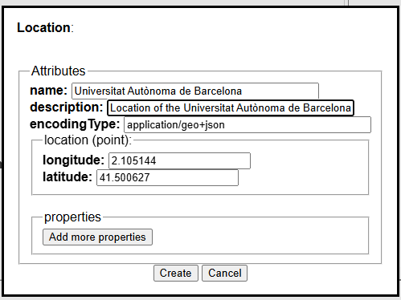
This is the result that opens in a new page when you click the link following Available at:.
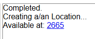
If you want to see how the STA service has been updated with the new information, link the corresponding entity tool in its plural form (Locations).
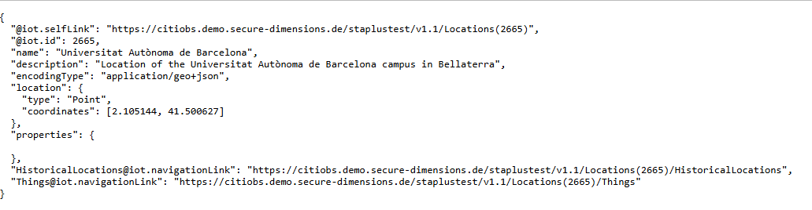
Edit
To edit a Location, you must first select it using a tool that allows you to select only that specific record (you can use Select Resource, Select Row, or Filter Rows).
By double-clicking with the left mouse button, the dialog for this Location will open, displaying all its information. Modify the editable fields.
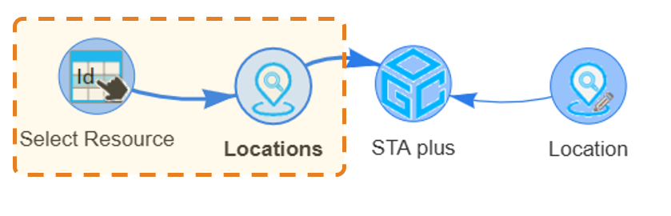
Once this is done, click the Update button to automatically send the request to the STA service. If the operation is successful, a message similar to the following will appear on the right-hand side.
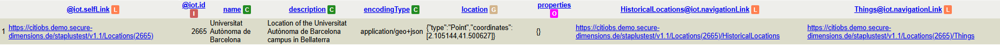
Clicking on the Location ID will open a new browser tab displaying the updated entity.
Delete
To delete a Location from the STA service, you must first select it using a tool that allows you to select the corresponding record (you can use Select Resource, Select Row, or Filter Rows).
By double-clicking with the left mouse button, the dialog for this Location will open, displaying all its information. The same dialog as the one used for editing the Location will appear. To delete the Location, simply click the Delete button.
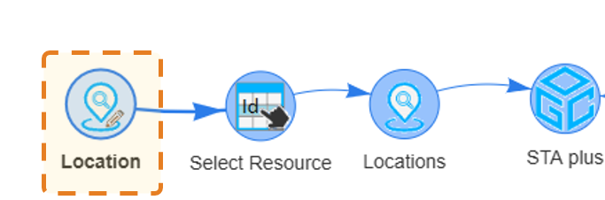
Recipes where this tool is used:
 MultiDatastream
MultiDatastream
Setting Up the Node:

How to Use the Node:
The MultiDatastream tool allows you to create a new MultiDatastream entity in the connected STA service. To create a MultiDatastream, the MultiDatastream tool must be linked to the STA service and to all required entities. You must also be logged in to TAPIS.
Attributes of the entity
- name (CharacterString): A property provides a label for the MultiDatastream entity, commonly a descriptive name.
- description (CharacterString): A property provides a description of the MultiDatastream entity.
- unitOfMeasurements (UnitOfMeasurement Array): The units of measurement used by the MultiDatastream.
- observationType (URI): The type of Observation used by the MultiDatastream.
- observedArea (GeoJSON Polygon [0..1]): The geographical area covered by the MultiDatastream.
- phenomenonTime (TM_Object [0..1]): The time interval during which the MultiDatastream's Observations occur.
- resultTime (TM_Object [0..1]): The time interval during which the MultiDatastream's Observations are received by the system.
- properties (JSON Object [0..1]): A JSON object containing additional information about the MultiDatastream.
Create
To create a new MultiDatastream, you must be logged in to TAPIS. The MultiDatastream tool must be linked to the STA service and to all required entities.
To open the dialog, double-click with the left mouse button. The required linked entities and their IDs are added automatically. Complete the remaining fields and click Create.

If the entity has been created successfully, a text similar to this will appear on the right. You can view the entity you have just created by clicking on the text following Available at:.

This is the result that opens in a new page when you click the link following Available at:.

If you want to see how the STA service has been updated with the new information, link the corresponding entity tool in its plural form (MultiDatastreams).

Edit
To edit a MultiDatastream, you must first select it using a tool that allows you to select only that specific record (you can use Select Resource, Select Row, or Filter Rows).
By double-clicking with the left mouse button, the dialog for this MultiDatastream will open, displaying all its information. Modify the editable fields.

Once this is done, click the Update button to automatically send the request to the STA service. If the operation is successful, a message similar to the following will appear on the right-hand side.

Clicking on the MultiDatastream ID will open a new browser tab displaying the updated entity.
Delete
To delete a MultiDatastream from the STA service, you must first select it using a tool that allows you to select the corresponding record (you can use Select Resource, Select Row, or Filter Rows).
By double-clicking with the left mouse button, the dialog for this MultiDatastream will open, displaying all its information. The same dialog as the one used for editing the MultiDatastream will appear. To delete the MultiDatastream, simply click the Delete button.

Recipes where this tool is used:
 ObservationGroup
ObservationGroup
Setting Up the Node:

How to Use the Node:
The ObservationGroup tool allows you to create a new ObservationGroup entity in the connected STA service. To create an ObservationGroup, the tool must be linked to the STA service and to the required entities. You must also be logged in to TAPIS.
Attributes of the entity
- name (CharacterString): A label for the ObservationGroup entity, commonly expressed as a descriptive name.
- description (CharacterString): A short description of the ObservationGroup entity.
- purpose (CharacterString [0..1]): A short description of the purpose of the ObservationGroup entity.
- creationTime (TM Instant): The time at which the ObservationGroup was created.
- endTime (TM Instant [0..1]): The end time of the ObservationGroup.
- termsOfUse (CharacterString [0..1]): The terms of use applicable to the ObservationGroup entity.
- privacyPolicy (CharacterString [0..1]): The terms of use concerning personal data contained in the ObservationGroup entity.
- dataQuality (JSON Object [0..1]): Quality information concerning the observations contained in the group.
- properties (JSON Object [0..1]): Additional properties associated with the ObservationGroup.
Create
To create a new ObservationGroup, you must be logged in to TAPIS. The tool must be linked to the STA service and to the required entities.
To open the dialog, double-click with the left mouse button. The required linked entities and their IDs are added automatically. Complete the available fields and click Create.

If the entity has been created successfully, a text similar to this will appear on the right. You can view the entity you have just created by clicking on the text following Available at:.

This is the result that opens in a new page when you click the link following Available at:.

If you want to see how the STA service has been updated with the new information, link the corresponding entity tool in its plural form (ObservationGroups).

Edit
To edit an ObservationGroup, you must first select it using a tool that allows you to select only that specific record (you can use Select Resource, Select Row, or Filter Rows).
By double-clicking with the left mouse button, the dialog for this ObservationGroup will open, displaying all its information. Modify the editable fields.

Once this is done, click the Update button to automatically send the request to the STA service. If the operation is successful, a message similar to the following will appear on the right-hand side.

Clicking on the ObservationGroup ID will open a new browser tab displaying the updated entity.
Delete
To delete an ObservationGroup from the STA service, you must first select it using a tool that allows you to select the corresponding record (you can use Select Resource, Select Row, or Filter Rows).
By double-clicking with the left mouse button, the dialog for this ObservationGroup will open, displaying all its information. The same dialog as the one used for editing the ObservationGroup will appear. To delete the ObservationGroup, simply click the Delete button.

Recipes where this tool is used:
 Observation
Observation
Setting Up the Node:

How to Use the Node:
The Observation tool allows you to create a new Observation entity in the connected STA service. To create an Observation, the Observation tool must be linked to the STA service and to all required entities. You must also be logged in to TAPIS.
Attributes of the entity
- phenomenonTime (TM_Object): The time at which the Observation takes place.
- result (Any): The estimated value of the observed property.
- resultTime (DateTime [0..1]): The time when the Observation result was received by the system.
- resultQuality (DQ_Element [0..1]): Quality information concerning the Observation result.
- validTime (TM_Period [0..1]): The time period during which the Observation result is valid.
- parameters (JSON Object [0..1]): A JSON object containing additional parameters associated with the Observation.
- properties (JSON Object [0..1]): A JSON object containing additional information about the Observation.
Create
To create a new Observation, you must be logged in to TAPIS. The Observation tool must be linked to the STA service and to all required entities.
To open the dialog, double-click with the left mouse button. The required linked entities and their IDs are added automatically. Complete the remaining fields and click Create.

If the entity has been created successfully, a text similar to this will appear on the right. You can view the entity you have just created by clicking on the text following Available at:.

This is the result that opens in a new page when you click the link following Available at:.

If you want to see how the STA service has been updated with the new information, link the corresponding entity tool in its plural form (Observations).

Edit
To edit an Observation, you must first select it using a tool that allows you to select only that specific record (you can use Select Resource, Select Row, or Filter Rows).
By double-clicking with the left mouse button, the dialog for this Observation will open, displaying all its information. Modify the editable fields.

Once this is done, click the Update button to automatically send the request to the STA service. If the operation is successful, a message similar to the following will appear on the right-hand side.

Clicking on the Observation ID will open a new browser tab displaying the updated entity.
Delete
To delete an Observation from the STA service, you must first select it using a tool that allows you to select the corresponding record (you can use Select Resource, Select Row, or Filter Rows).
By double-clicking with the left mouse button, the dialog for this Observation will open, displaying all its information. The same dialog as the one used for editing the Observation will appear. To delete the Observation, simply click the Delete button.

Recipes where this tool is used:
 ObservedProperty
ObservedProperty
Setting Up the Node:
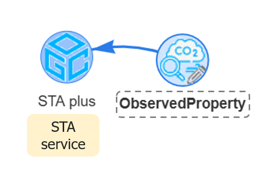
How to Use the Node:
The ObservedProperty tool allows you to create a new ObservedProperty entity in the connected STA service. To create an ObservedProperty, the ObservedProperty tool only needs to be linked to the STA service, as it does not depend on any other entity. As with the other tools, you must also be logged in to TAPIS.
Attributes of the entity
- name (CharacterString): A property provides a label for the ObservedProperty entity, commonly a descriptive name.
- description (CharacterString): A property provides a description of the ObservedProperty entity.
- definition (URI): The URI defining the ObservedProperty.
- properties (JSON Object [0..1]): A JSON object containing additional information about the ObservedProperty.
Create
To create a new ObservedProperty, you must be logged in to TAPIS.
To open the dialog, double-click with the left mouse button. The dialog contains all the attributes of the ObservedProperty. The Properties field is not mandatory. Complete the fields and click Create.
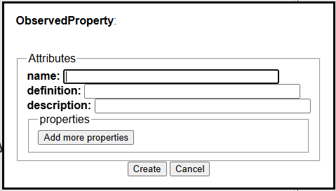
If the entity has been created successfully, a text similar to this will appear on the right. You can view the entity you have just created by clicking on the text following Available at:.
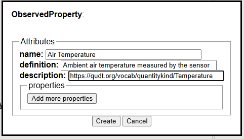
This is the result that opens in a new page when you click the link following Available at:.
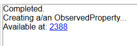
If you want to see how the STA service has been updated with the new information, link the corresponding entity tool in its plural form (ObservedProperties).
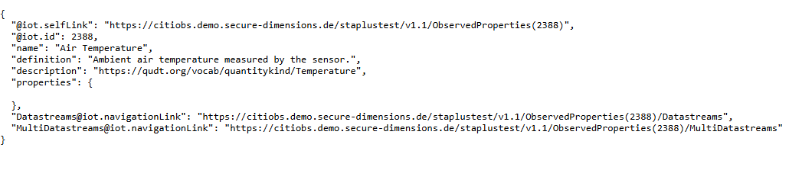
Edit
To edit an ObservedProperty, you must first select it using a tool that allows you to select only that specific record (you can use Select Resource, Select Row, or Filter Rows).
By double-clicking with the left mouse button, the dialog for this ObservedProperty will open, displaying all its information. Modify the editable fields.
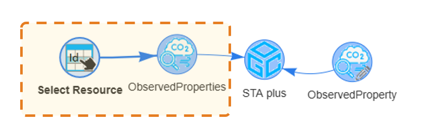
Once this is done, click the Update button to automatically send the request to the STA service. If the operation is successful, a message similar to the following will appear on the right-hand side.
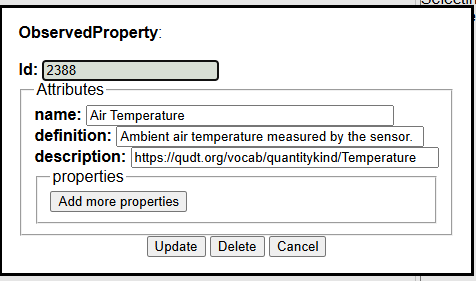
Clicking on the ObservedProperty ID will open a new browser tab displaying the updated entity.
Delete
To delete an ObservedProperty from the STA service, you must first select it using a tool that allows you to select the corresponding record (you can use Select Resource, Select Row, or Filter Rows).
By double-clicking with the left mouse button, the dialog for this ObservedProperty will open, displaying all its information. The same dialog as the one used for editing the ObservedProperty will appear. To delete the ObservedProperty, simply click the Delete button.
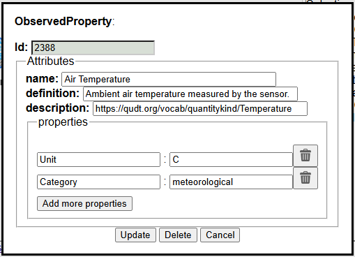
Recipes where this tool is used:
 Party
Party
Setting Up the Node:
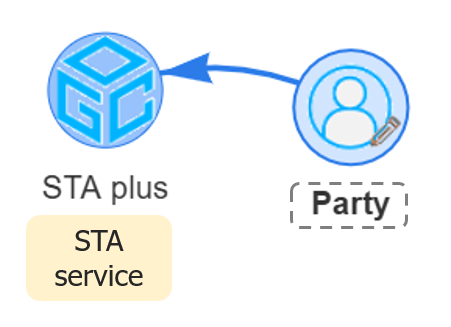
How to Use the Node:
The Party tool allows you to create a new Party entity in the connected STA service. To create a Party, the Party tool only needs to be linked to the STA service, as it does not depend on any other entity. As with the other tools, you must also be logged in to TAPIS.
In this case, you can only create an entity; editing or deleting it is not supported.
Attributes of the entity
- role (CharacterString): The role of the Party. The possible values are individual or institutional.
- description (CharacterString [0..1]): A short description of the Party.
- displayName (CharacterString [0..1]): A name commonly used to address or refer to the Party.
- authId (CharacterString [0..1]): A system-wide unique identifier used to uniquely identify the Party, such as an identifier obtained from an authentication system.
Create
To create a new Party, you must be logged in to TAPIS. When you log in, the system generates a code that is used as the authorId associated with that login.
To open the dialog, double-click with the left mouse button. Two fields will be filled in automatically: the authorId, which is the code generated during the TAPIS login and cannot be modified, and the role, which can be modified but is mandatory. “Complete the remaining fields
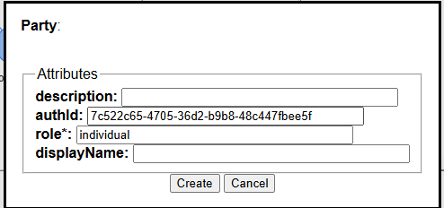
This is the data for the example. Once you have finished, click Create.
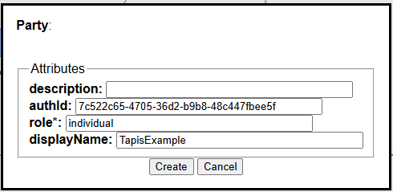
If the entity has been created successfully, a text similar to this will appear on the right. You can view the entity you have just created by clicking on the text following Available at:
If the entity you are trying to create already exists, it will not be created again. However, the displayed text will be the same.
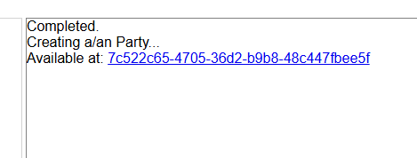
This is the result that opens in a new page when you click the link following Available at:.
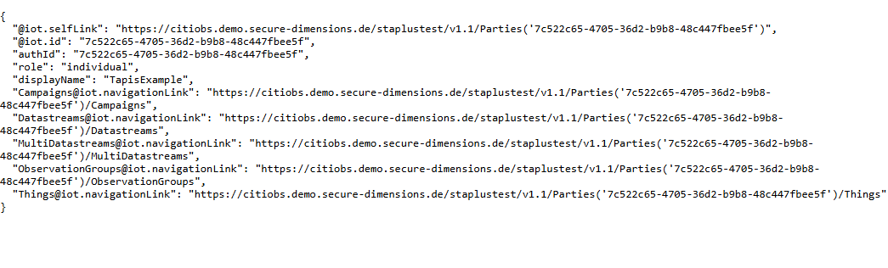
If you want to see how the STA service has been updated with the new information, link the corresponding entity tool in its plural form (Parties).
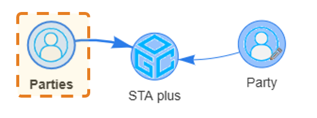
Here is the result showing the loaded data.
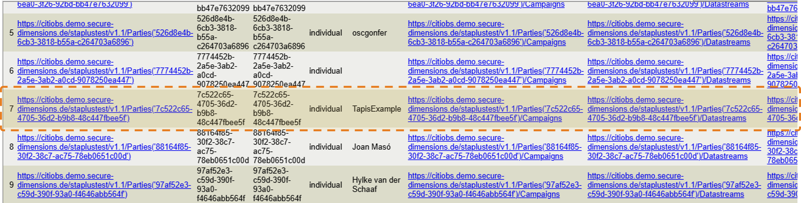
Edit
Not suported
Delete
Not suported
Recipes where this tool is used:
 Relation
Relation
Setting Up the Node:

How to Use the Node:
The Relation tool allows you to create a new Relation entity in the connected STA service. To create a Relation, the Relation tool must be linked to the STA service and to the required entities. You must also be logged in to TAPIS.
Attributes of the entity
- role (URI): A URI referencing the definition of the Relation entity.
- description (CharacterString [0..1]): A short description of the Relation entity.
- externalResource (URI [0..1]): A URI referencing the external resource associated with the Relation.
- properties (JSON Object [0..1]): Additional properties associated with the Relation.
Create
To create a new Relation, you must be logged in to TAPIS.
To open the dialog, double-click with the left mouse button. The dialog contains all the attributes of the Relation and any required linked entities. Complete the fields and click Create.

If the entity has been created successfully, a text similar to this will appear on the right. You can view the entity you have just created by clicking on the text following Available at:.

This is the result that opens in a new page when you click the link following Available at:.

If you want to see how the STA service has been updated with the new information, link the corresponding entity tool in its plural form (Relations).

Edit
To edit a Relation, you must first select it using a tool that allows you to select only that specific record (you can use Select Resource, Select Row, or Filter Rows).
By double-clicking with the left mouse button, the dialog for this Relation will open, displaying all its information. Modify the editable fields.

Once this is done, click the Update button to automatically send the request to the STA service. If the operation is successful, a message similar to the following will appear on the right-hand side.

Clicking on the Relation ID will open a new browser tab displaying the updated entity.
Delete
To delete a Relation from the STA service, you must first select it using a tool that allows you to select the corresponding record (you can use Select Resource, Select Row, or Filter Rows).
By double-clicking with the left mouse button, the dialog for this Relation will open, displaying all its information. The same dialog as the one used for editing the Relation will appear. To delete the Relation, simply click the Delete button.

Recipes where this tool is used:
 Sensor
Sensor
Setting Up the Node:
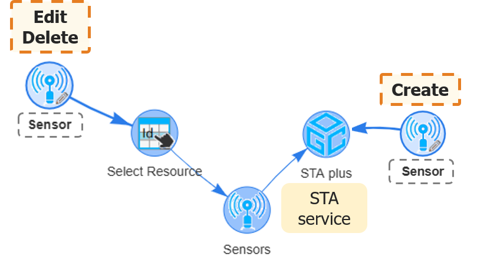
How to Use the Node:
The Sensor tool allows you to create, edit, and delete sensors in the connected STA service.
To perform any of these actions, you must be logged in to TAPIS. When you create a sensor, it is automatically associated with the Party associated with the account you used to log in to TAPIS.
You can only edit or delete entities associated with your Party.
Attributes of the entity
- name (CharacterString): A property provides a label for the Sensor entity, commonly a descriptive name.
- description (CharacterString): A property provides a description of the Sensor entity.
- encodingType (CharacterString): The encoding type of the metadata describing the Sensor.
- metadata (Any): The metadata describing the Sensor, encoded according to the specified encoding type.
- properties (JSON Object [0..1]): A JSON object containing additional information about the Sensor.
Create
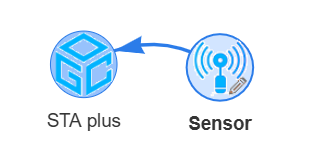
To create a new Sensor entity, the corresponding tool only needs to be linked to the STA service, as it does not depend on any other entity. To open the dialog, double-click with the left mouse button. The dialog contains all the attributes of the sensor. The Properties field is not mandatory. You can add as many properties as you want, one by one.
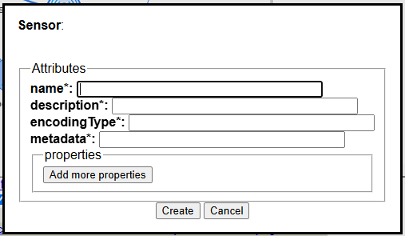
This is the data for the example. Once you have finished, click Create.
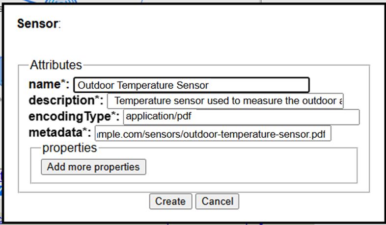
If the entity has been created successfully, a text similar to this will appear on the right. You can view the entity you have just created by clicking on the text following Available at:
If the entity you are trying to create already exists, it will not be created again. However, the displayed text will be the same.
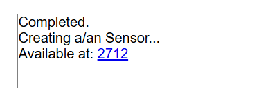
This is the result that opens in a new page when you click the link following Available at:.
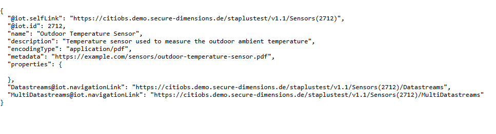
If you want to see how the STA service has been updated with the new information, link the corresponding entity tool in its plural form (Sensors). If the service contains a large number of sensors, use a tool to select the desired sensor. In this case, the Select Resource tool is used. Use the ID provided in the information under Available at:.
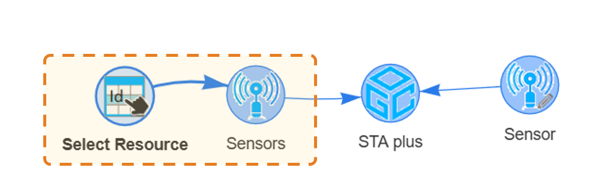
Here is the result showing the loaded data.
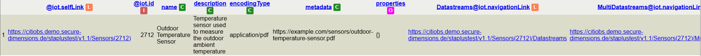
Edit
To edit a record associated with your Party, you must first link a tool that allows you to select only that specific record (you can use Select Resource, Select Row, or Filter Rows). Continuing with the previous example, right-click and add the Sensor tool.
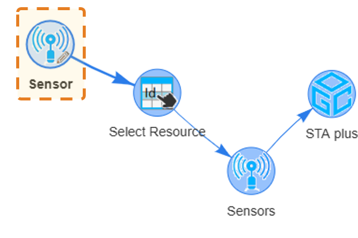
By double-clicking with the left mouse button, the dialog for this sensor will open, displaying all its information. All fields are editable except for the ID field.
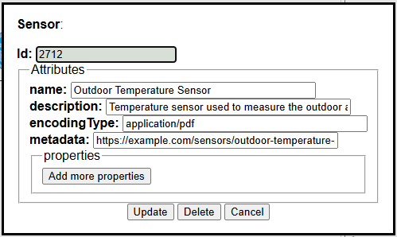
In this example, we will add two properties to the existing sensor. To add properties, simply click Add more properties to display the fields where you can enter them. Properties can also be deleted by clicking the trash icon.
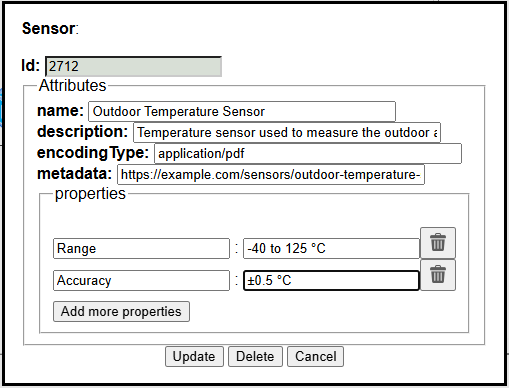
Once this is done, click the Update button to automatically send the request to the STA service . If the operation is successful, a message similar to the following will appear on the right-hand side.
Clicking on the sensor ID will open a new browser tab displaying the updated entity.
Delete
To delete a sensor from the STA service, as in the case of edit a sensor, you must first select it using a tool that allows you to select the corresponding record (you can use Select Resource, Select Row, or Filter Rows).
By double-clicking with the left mouse button, the dialog for this sensor will open, displaying all its information. The same dialog as the one used for editing the sensor will appear. To delete the sensor, simply click the Delete button.
Recipes where this tool is used:
 Thing
Thing
Setting Up the Node:
How to Use the Node:
The Thing tool allows you to create a new Thing entity in the connected STA service. To create a Thing, the Thing tool must be linked to the STA service and to any required entities. You must also be logged in to TAPIS.
Attributes of the entity
- name (CharacterString): A property provides a label for the Thing entity, commonly a descriptive name.
- description (CharacterString): A property provides a description of the Thing entity.
- properties (JSON Object [0..1]): A JSON object containing additional information about the Thing.
Create
To create a new Thing, you must be logged in to TAPIS.
To open the dialog, double-click with the left mouse button. The dialog contains all the attributes of the Thing. The Properties field is not mandatory. You can add as many properties as you want, one by one.
If the entity has been created successfully, a text similar to this will appear on the right. You can view the entity you have just created by clicking on the text following Available at:.
This is the result that opens in a new page when you click the link following Available at:.
If you want to see how the STA service has been updated with the new information, link the corresponding entity tool in its plural form (Things).
Edit
To edit a Thing, you must first select it using a tool that allows you to select only that specific record (you can use Select Resource, Select Row, or Filter Rows).
By double-clicking with the left mouse button, the dialog for this Thing will open, displaying all its information. Modify the editable fields.
Once this is done, click the Update button to automatically send the request to the STA service. If the operation is successful, a message similar to the following will appear on the right-hand side.
Clicking on the Thing ID will open a new browser tab displaying the updated entity.
Delete
To delete a Thing from the STA service, you must first select it using a tool that allows you to select the corresponding record (you can use Select Resource, Select Row, or Filter Rows).
By double-clicking with the left mouse button, the dialog for this Thing will open, displaying all its information. The same dialog as the one used for editing the Thing will appear. To delete the Thing, simply click the Delete button.
Recipes where this tool is used: